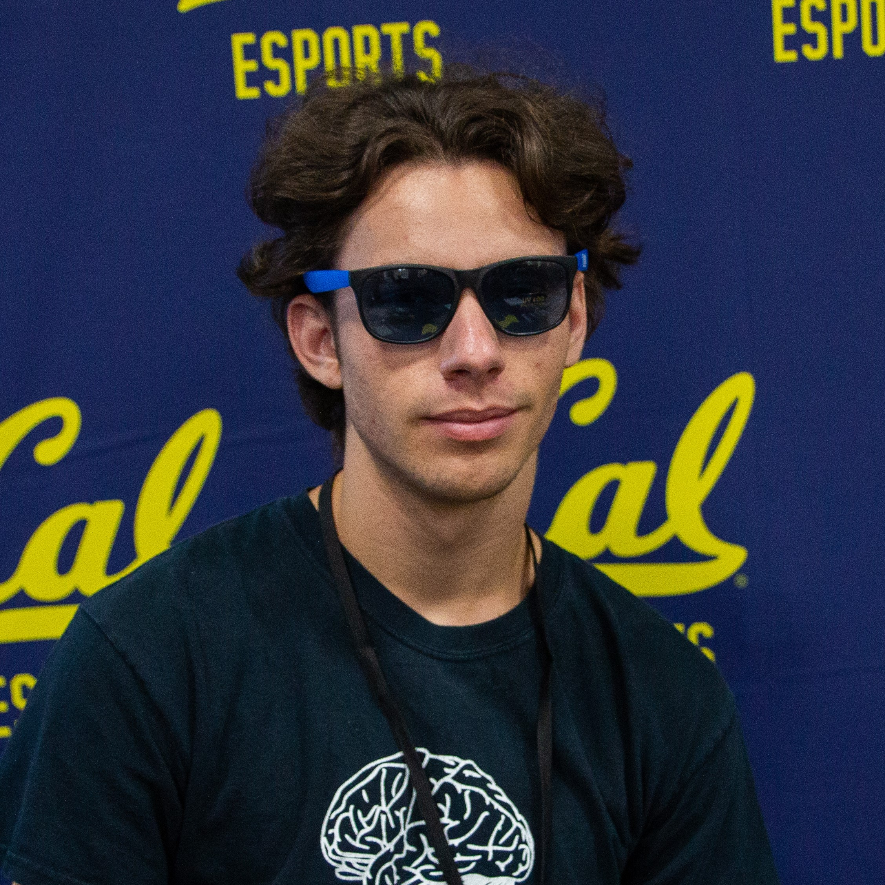

Executive Board
Our club events and community are led by the Executive Board, from planning tournaments to leading LAN parties to graphic design and more.

Patrick Visan | LegendAchiever9
President
Bioengineering, Class of 2021
Favorite Champ/Lane: I like Ashe... but I play mid lane. And yes, it's Mid & Feed.
What do you like to do besides League? I am ADDICTED to Milk Tea. I get at least one cup a day, and I think I’m starting to get diabetes… too much sugar. I need to stop, please remind me that if you ever see me with a cup :’(. I enjoy eating out a lot. I love any kinds of food and only milk tea. I enjoy watching TV shows if I’m not playing league. And my most recent hobby is playing with makeup. Please feel free to tell me if I suck at it and give me critiques to improve!
Why are you in Berkeley Legends? I’ve been playing league since end of Season one. My ELO for that season was around 800. This game is the most addicting game for me since Maplestory. As a result, coming from a high school without any sort of game-club and hearing that there’s a club specifically FOR a game I enjoy playing, I had to join. In a sense, it allows me to meet the person on the other side of the computer screen and meet new people since… most of my friends… play League. I don’t think I have that many friends who don’t. :);)
 Amy Jiang | Fysiae
Amy Jiang | Fysiae
Vice President
Mechanical Engineering & EECS, Class of 2022
Favorite Champ/Lane: ADC in 2020 KEKW
What do you like to do besides League? Sometimes I build racecars, or host science tournaments, or make things look pretty, or cheer for Liquid.
Why are you in Berkeley Legends? I didn't really have a community to play games with throughout high school, so I was really excited to hear about a whole entire gaming club from a Travis Gafford interview and immediately got involved. I've met such a vibrant and varied community through Berkeley Legends and I want to make it as welcoming for others as it has been for me!